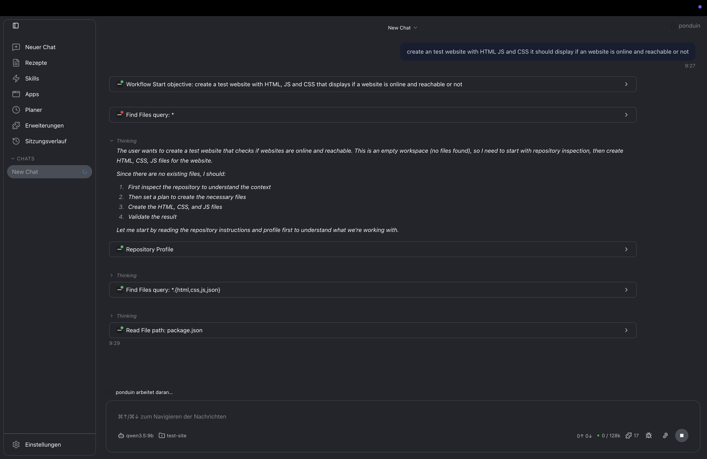
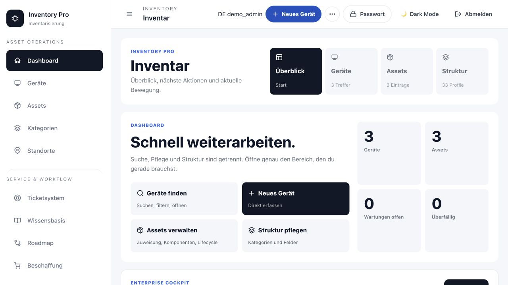

Produktiver IT-Betrieb im Gesundheitsumfeld, heute Netzwerktechnik im professionellen Kundenumfeld.
Portfolio · Netzwerktechnik & Systemintegration
Infrastruktur, die nachvollziehbar funktioniert.
Ich bin Netzwerktechniker und Fachinformatiker für Systemintegration. Mein Fokus liegt auf stabilem Netzwerkbetrieb, klaren Zugriffspfaden, strukturierter Fehleranalyse und einer Dokumentation, die im Alltag wirklich weiterhilft.
Sieben aktuelle Cisco Networking Academy Badges, öffentlich auf Credly verifiziert und als PDF hinterlegt.
Öffentliche Repositories, eine DOI-veröffentlichte Forschungsarbeit und eigene Infrastruktur- sowie Softwareprojekte.
Ausgewählte Arbeitsproben
Produkte und Systeme mit überprüfbarer Substanz.
Drei sehr unterschiedliche Projekte zeigen denselben Anspruch: klare Aufgaben, nachvollziehbare Entscheidungen und öffentlich einsehbare technische Arbeit. Die Links führen direkt zum Produkt und in den jeweiligen Code.

Ponduin
Ein lokaler, erweiterbarer KI-Agent für Code, Terminal, Dateien und mehrstufige technische Workflows. Der öffentliche Code zeigt unter anderem native Rust-Komponenten, Desktop-Oberfläche, CLI, MCP-Integration, Tests und Build-Pipelines.

Inventory Pro
Inventar-, Ticket- und Wissensplattform für den IT-Betrieb. Das Projekt verbindet Asset-Lifecycle, Serviceprozesse, rollenbasierte Berechtigungen, MFA, Audit-Verläufe und sicherere Instanzverknüpfungen.
Joey's Slimeventure
Ein öffentlich entwickeltes 2D-Spielprojekt mit Browser-Demo, Steam-Präsenz und offenem Repository. Es zeigt Planung, kontinuierliche Iteration und die Umsetzung eines eigenständigen Produkts außerhalb der Infrastrukturarbeit.
Unabhängige Forschungsarbeit · 2026
Adaptives Load Balancing auf Edge-Hardware.
Konzeption, Implementierung und Evaluation eines mehrmetrischen Verfahrens mit NGINX und Raspberry Pi.
Die Arbeit ist öffentlich über Zenodo mit DOI veröffentlicht. Sie untersucht nicht nur eine Idee, sondern dokumentiert Versuchsaufbau, Vergleichsverfahren, Rohdaten, statistische Auswertung und Grenzen des Laboraufbaus.
+14,7%Effizienzgewinn gegenüber Round Robin laut gepaartem Laborvergleich.
+6,5%Effizienzgewinn gegenüber Least Connections im selben Versuchsaufbau.
92,1%Load-Balancing-Effizienz bei ungleicher Last im untersuchten Szenario.
+7,8%Zusätzliche Latenz durch Metrik-Sammlung - als dokumentierter Trade-off.
Die Werte gelten für den dokumentierten Raspberry-Pi-Laboraufbau; eine Übertragbarkeit auf größere oder andere Systeme wird in der Arbeit ausdrücklich begrenzt.
Kompetenzen mit Beleg
Keine Prozentbalken. Kontext und Quellen.
Die Einordnung trennt bewusst zwischen nachgewiesenen Grundlagen, praktischer Arbeit und Vertiefungsfeldern. Sie soll ein realistisches Gespräch über Erfahrung ermöglichen - nicht Kompetenzen aufblasen.
Netzwerkbetrieb & Troubleshooting
IP-Adressierung, IPv4/IPv6, Protokolle, Switching-Grundlagen, Router und strukturierte Fehleranalyse.
Beleg: Cisco Badges und Credly SkillsSecurity-nahe Infrastruktur
Netzwerksegmentierung, Firewall-/VPN-Konzepte, sichere Zugriffspfade, DNS/DHCP sowie Reverse-Proxy- und Zertifikatsthemen.
Beleg: Infrastrukturprojekte, Forschung, Cisco NachweiseSystemintegration & Betrieb
Server-/Client-Betrieb, Rechteverwaltung, Updates, Support und Dokumentation in produktivem Ausbildungsumfeld.
Beleg: Ausbildung und beruflicher WerdegangAutomatisierung & Software
Python, PowerShell, Web-Oberflächen und produktnahe Entwicklung für wiederkehrende technische oder betriebliche Aufgaben.
Beleg: öffentliche Repositories und ArbeitsprobenAlle verifizierten Credly Skills ansehenÖffentliche Repositories ansehen
Zertifikate & Badges
Aktuelle Cisco Nachweise, direkt prüfbar.
Zuerst stehen die drei aussagekräftigsten Nachweise: Ethical Hacking sowie die aktuelle Netzwerk- und Security-Laufbahn. Die vollständige Sammlung mit allen PDFs bleibt ohne Umwege erreichbar; das öffentliche Credly-Profil ist die verifizierende Quelle.
Ethical Hacker
Cisco · 03.09.2026PDF öffnenNetwork Technician Career Path
Cisco · 10.07.2026PDF öffnenNetwork Addressing and Basic Troubleshooting
Cisco · 01.09.2026PDF öffnenAlle 7 Zertifikate & PDFs anzeigen
Network Support and Security
Cisco · 01.09.2026PDF öffnenNetworking Devices and Initial Configuration
Cisco · 27.04.2026PDF öffnenNetworking Basics
Cisco · 16.11.2025PDF öffnenIntroduction to Cybersecurity
Cisco · 14.11.2025PDF öffnenWerdegang
Praxis, Ausbildung und eigenständige Arbeit.
Meine Laufbahn verbindet IT-Betrieb im Gesundheitsumfeld, eine abgeschlossene Ausbildung, heutige Arbeit in der Netzwerktechnik und selbst initiierte technische Projekte.
Netzwerktechniker · Weiss IT Solutions GmbH
Aktive Netzwerktechnik, Betrieb, Tickets, technische Umsetzung und Weiterentwicklung im professionellen Kundenumfeld.
Fachinformatiker für Systemintegration · Städtisches Klinikum Wolfenbüttel gGmbH
Produktiver Server-, Client- und Infrastruktur-Betrieb, Support, Rechteverwaltung, Updates, Dokumentation und Betriebssicherheit.
Unabhängige Forschungsarbeit · Zenodo DOI
Konzeption und Evaluation eines adaptiven Load-Balancing-Systems mit Reverse Proxy auf Raspberry-Pi-Hardware.
Fachabitur · Schwerpunkt Technik
BBS Goslar-Baßgeige/Seesen mit technischem Schwerpunkt in Informatik, Elektrotechnik, Mathematik und technischem Englisch.
Praktikum Fachinformatik Systemintegration · Stadtverwaltung Goslar
Frühe praktische Einblicke in IT-Betrieb, Support und Verwaltungsumgebungen.
Kontakt
Gern im technischen Gespräch.
Für berufliche Anfragen, fachlichen Austausch oder Rückfragen zu den veröffentlichten Arbeiten bin ich direkt erreichbar.